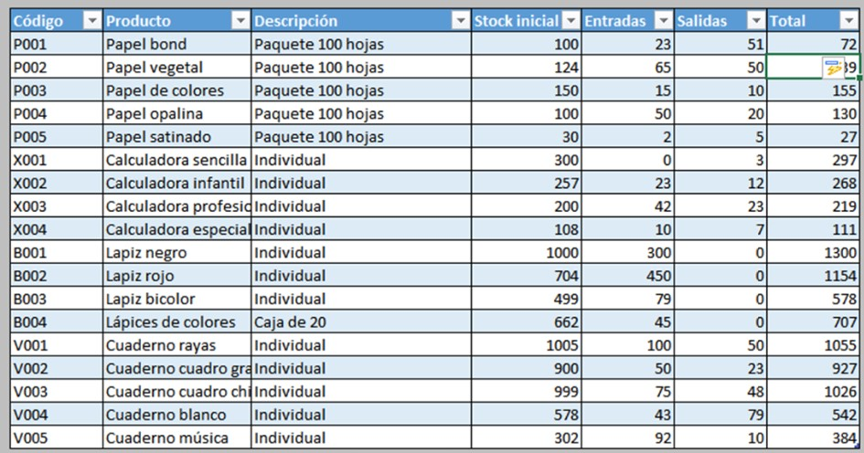

-NUESTROS CASOS DE ÉXITO-
Durante la existencia de esta compañía hemos creado diversos proyectos que han resultado exitosos cumpliendo o inclusive sobrepasando las expectativas de nuestros clientes que han quedado sumamente satisfechos con nuestro trabajo, nuestros programas son fáciles de utilizar pero sobre todo son de mucha ayuda para las personas que lo utilizan, ya sean empleados de una empresa, personas que lo utilizan para su vida diaria o incluso estudiantes.
ALGUNOS DE NUESTROS MEJORES PROYECTOS HAN SIDO LOS SIGUIENTES:
-Uno de nuestros proyectos más exitosos ha sido la creación de un programa para una empresa de tiendas de autoservicio con varias sucursales en el país, dicho programa compara el numero de compras que se realizan en las tiendas y las compara con lo que se tenía guardado para administrar mejor el inventario.
-Otro de los programas exitosos que creamos es un programa que ayuda a las personas a administrar sus gastos de una forma sencilla y rápida, ya que muchas personas no administran bien su dinero y les "falta" dinero dias antes de que reciban su pago, pero esto, la mayoría de las veces, se debe a la falta de administración.
-Uno de nuestros primeros programas y que resaltó, fue un programa que ayudaba a estudiantes a administrar su tiempo, era como un calendario y podian agregar distintas actividades pendientes y revisarlo fácilmente.

Uno de nuestros proyectos actuales es una aplicación que ayuda a las personas a saber que posibilidades tienen de contraer algunas de las enfernedades que más afectan a los mexicanos y les da a conocer estadisticas sobre dichas enfenmedades.